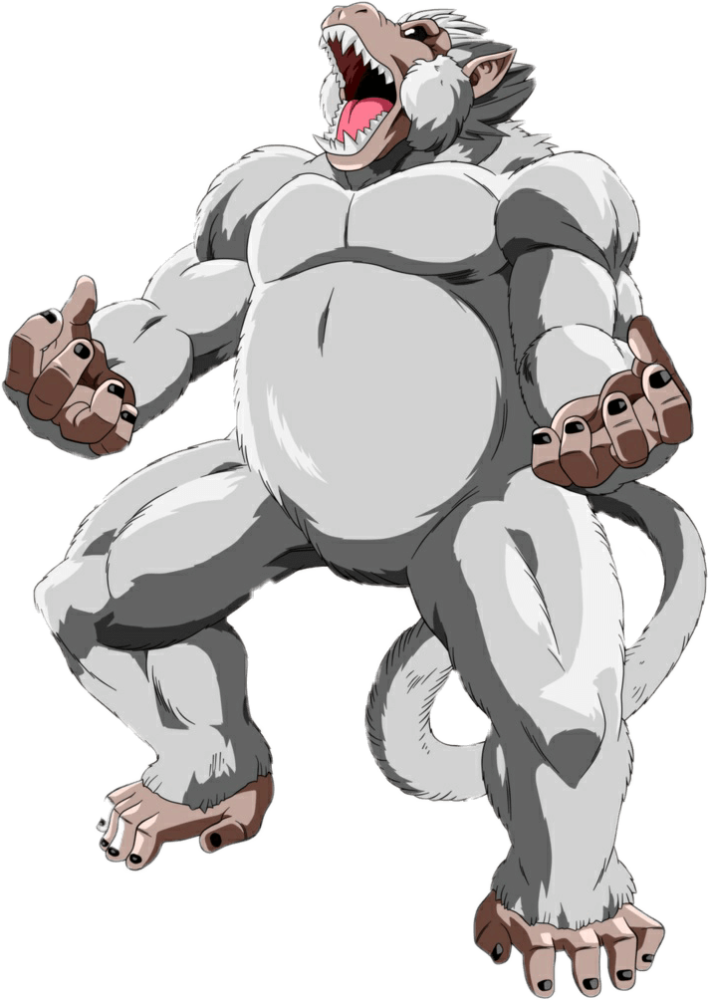
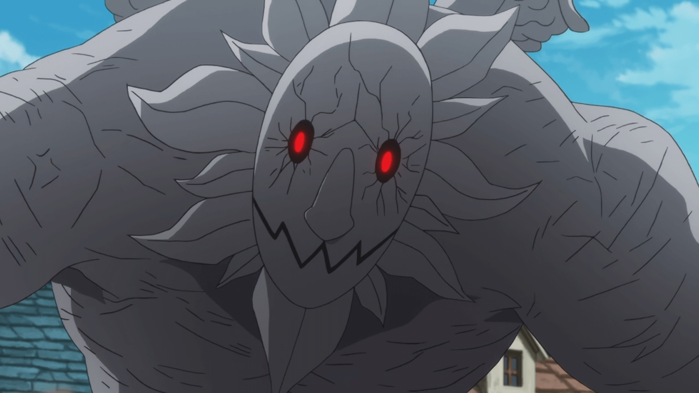

Beasts
Beast Transformations for Saiyans,Wizards & Ninjas
Beasts are transformations which a character can get and use in a fight. A beast gives its user additional moves which are not in his/her card originally. When one has a beast it has to be summoned before it's moves can be used.
A beast can be obtained by beating it in a battle
Ninjas have the Tailed Beasts, Wizards have the Dragons while Saiyans have the Oozarus(Great Apes). There are many different beasts with different strengths and abilities.
A player with a beast can be challenged to a battle for that beast, if the weilder agrees and loses, he/she loses their beast to the challenger. A weilder can choose to accept or decline the challenge.
Even in a beast mode, one can still use their original skills/moves/jutsus.
When battling a beast, that beast has an unlimited attack which is not part of it's skill card called nom attack. The nom attack can be used as long as the beast does not have an owner. The nom attack for ninja beasts give 2hp damage while that of the beasts of wizards & saiyans give 3hp damage.
When a beast battle is ongoing and the number of turns has reached 15, the beast regains all its used skills back, this also occurs at an arithmetic rate of turns (i.e turn 30, turn 45, etc).
The Health and Charge points of an unowned beast is stated on the skill card on this site, as well as the amount of hp & cp gained when it is summoned by an owner.
The amount of health and cp of a beast doubles when it faces 2 people and triples when facing 3. The max number of people that can face one beast at a time is 3.
Ninja beasts can only be summoned after the 3rd turn, Wizards at 5th turn and Saiyan beasts can only be summoned when your health is what it will be if your divide your original health by 1.5.
Fighting a beast and losing will mean you either lose 50 crowns or 5xp(you choose), and the effects of death battle takes place.
A player can only have one beast at a time.
Ninja Beasts

Name: Shukaku
Clan: Ninja Flare
Rank: 1 Tail
Health: 20 CP: 22
Jinchuriki:
5cp to summon, gain 3hp & 6cp after summoning
Beast Skills
A- Whip: Removes 3hp from opponents life. 2cp to use
B- Chakra Transfer Jutsu: Takes 3hp form opponent life & adds to user. 1cp to use.
C- Desert Layered Imperial Funeral Seal: Seals 2 opponent unused moves till opponent life is 3. 2cp to use
D- Charged Tail Beast Bomb: Takes 5hp from opponents health. 3cp to use.
E- Rush Jutsu: Cannot be used if owned by a player. Take 4hp from opp life, this cannot be destroyed by a def jutsu, if a player tries to defend against this with a def move, destroy that jutsu and deal further 4hp damage to def skill user. 4cp to use.
Name: Matatabi
Clan: Uzumaki
Rank: 2 Tails
Health: 23 CP: 25
Jinchuriki:
5cp to summon, gain 2hp & 7cp after summoning
Beast Skills
A- Cat Claw Attack: -4 from opponent life. 3cp to use.
B- Flaming Petal Doujutsu: Forces opponent to use any available atk on himself/herself. User plays next(opponent can skip if he/she has no atk move to play). 2cp to use.
C- Great Cat Claw Attack: -5 from opponent life. 4cp to use.
D- Charged Tail Beast Bomb: -6 from opponent life. 5cp to use.
E- Rush Jutsu: Cannot be used if owned by a player. Take 4hp from opp life, this cannot be destroyed by a def jutsu, if a player tries to defend against this with a def move, destroy that jutsu and deal further 4hp damage to def skill user. 4cp to use.
Name: Sanbi
Clan: Desert Eagle
Rank: 3 Tails
Health: 26 CP: 28
Jinchuriki:
6cp to summon, gain 3hp & 9cp after summoning
Beast Skills
A- Whip: -3 from opponent life. 2cp to use.
B- Mist Dissary: +2hp to user. 1cp to use.
C- Aqua Ring: Deflects(removes & returns) the previous move by opponent, just like gakido but also works on defensive move, works like a mirror. 3cp to use
D- Rush Jutsu: Cannot be used if owned by a player. Take 4hp from opp life, this cannot be destroyed by a def jutsu, if a player tries to defend against this with a def move, destroy that jutsu and deal further 4hp damage to def skill user. 4cp to use.
E- Charged Tail Beast Bomb: -5 from opponent life. 4cp to use.
Name: Son Goku
Clan: Space
Rank: 4 Tails
Health: 27 CP: 29
Jinchuriki:
6cp to summon, gain 3hp & 10cp after summoning
Beast Skills
A- Lava Crush: -3 from opponent life. 2cp to use.
B- Molten Void: Puts opponent under a genjutsu which opponent must use 4cp to escape from. 2cp to use.
C- Boil Release: -4 from opponnent life. 3cp to use.
D- Charged Tail Beast Bomb: -5 from opponent life. 4cp to use
E- Rush Jutsu: Cannot be used if owned by a player. Take 4hp from opp life, this cannot be destroyed by a def jutsu, if a player tries to defend against this with a def move, destroy that jutsu and deal further 4hp damage to def skill user. 4cp to use
Name: Kokuo
Clan: Space
Rank: 5 Tails
Health: 29 CP: 31
Jinchuriki:
5cp to summon, gain 4hp & 7cp after summoning
Beast Skills
A- Kick: -4 from opponent life. 2cp to use
B- Ramming Horn: -5 from opponent life. 3cp to use.
C- Steam Shield: Cancels next or previous opponent move(depends on users choice). 1cp to use.
D- Uncharged Tail Beast Bomb: -4 from opponent life. 3cp to use
E- Boil Release: -6 from opponent life. 5cp to use.
F- Charged Tail Beast Bomb: -6 from opponent life. 5cp to use.

Name: Saiken
Clan: Uzumaki
Rank: 6 Tails
Health: 31 CP: 33
Jinchuriki:
7cp to summon, gain 5hp & 10cp after summoning
Beast Skills
A- Kick: -4 from opponent's life. 2cp to use
B- Ramming Horn: -5 from opponent life. 3cp to use.
C- Bang: Cancels two of opponent's move, works like shinra(can only cancel one if owned by a player). 2cp to use.
D- Uncharged Tail Beast Bomb: -4 from opponent's life. 2cp to use.
E- Boil Release: -6 from opponent's life. 4cp to use.
F- Charged Tail Beast Bomb: -6 from opponent's life. 5cp to use.

Name: Chomei
Clan: Uzumaki
Rank: 7 Tails
Health: 33 CP: 35
Jinchuriki:
8cp to summon, gain 4hp & 11cp after summoning
Beast Skills
A- Bite: -3 from opponent's life. 1cp to use.
B- Ramming Horn: -3 from opponent's life. 2cp to use.
C- Chakra Coccoon: Replenish any used move of user's choice, you still play. 2cp to use.
D- Uncharged Tail Beast Bomb: -4 from opponent's life. 3cp to use.
E- Scale Powder: -4 from opponent's life. 2cp to use.
F- Charged Tail Beast Bomb: -6 from opponent's life. 5cp to use.
Name: Gyuki
Clan: Desert-Eagle
Rank: 7 Tails
Health: 36 CP: 37
Jinchuriki:
8cp to summon, gain 5hp & 11cp after summoning
Beast Skills
A- Whip: -5 from opponent's life. 3cp to use.
B- Smash: -4 from opponent's life. 2cp to use.
C- Chakra Healing: Replenish user's life to the fullest(if owned by a player, replenish life to what it was immediately after beast was summoned). 5cp to use.
D- Uncharged Tail Beast Bomb: -4 from opponent's life. 2cp to use.
E- Tentacles Smash: -6 from opponent's life. 5cp to use.
F- Charged Tail Beast Bomb: -6 from opponent's life. 5cp to use.

Name: Kurama
Clan: Desert-Eagle
Rank: 9 Tails
Health: 39 CP: 43
Jinchuriki:
9cp to summon, gain 5hp & 13cp after summoning
Beast Skills
A- Whip: -5 from opponent's life. 3cp
B- Punch: -4 from opponent's life. 2cp to use.
C- Chakra Mode: Replenish user's life to the fullest(if owned by a player, replenish life to what it was after beast was summoned) and restore Kurama's whip & punch. 5cp to use.
D- Destructive Shockwave: Blocks opponent's next move and takes 2hp from opponent. 2cp to use.
E- Air Howl: -6 from opponent's life. 4cp to use.
F- Charged Tail Beast Bomb: -6 from opponent's life. 5cp to use.
Saiyan Beasts
Name: Half-Oozaru
Health: 20 CP: 20
Owner(s):
4cp to summon, gain 2hp & 6cp after summoning
Beast Skills
A- Punch: Give 3 damage to opponent. This damage cannot be neglected. 2cp to use.
B- Tail Whip: Give 3 damage to 2 opponents, if opponent neglects or destroys this skill, the beast transformation is removed. 2cp to use.
C- Half Ape Rush: Gain 3cp, give opponent 2 damage. 2cp to use.
D- 50ft Smack: Give maximum of 2 players 3 damage. 2cp to use.
E- Absorption & Return: Return all damage done to you in your last turn and gain punch & tail whip back. 3cp to use(Cannot be used if owned by a player).
Name: Great Ape Oozaru
Health: 24 CP: 22
Owner(s):
5cp to summon, gain 2hp & 8cp after summoning
Beast Skills
A- Punch: Give 4 damage to opponent. This damage cannot be neglected. 3cp to use.
B- Tail Whip: Give 3 damage to 2 opponents, if opponent neglects or destroys this skill, the beast transformation is removed. 2cp to use.
C- Oozaru Crush: Opponent loses 1hp every turn, when this effect is in play opponent cannot use phy attacks(eg punch, weapons). This skill lasts for 5 of your end turns. 3cp to use.
D- Ape Rush: Gain 3cp, give opponent 3 damage, this skill cannot be neglected. 2cp to use.
E- 100ft Smack: Give all players in the field 3 damage. 4cp to use.
Name: Golden Ape Oozaru
Health: 27 CP: 24
Owner(s):
7cp to summon, gain 4hp & 10cp after summoning
Beast Skills
A- Punch: Give 4 damage to opponent, this damage cannot be neglected. 3cp to use.
B- SS4 Transformation: Turn into a Super Saiyan 4 without paying any extra cp, to use this skill you need to have attained SS1 & SS2. 4cp to use.
C- Oozaru Scream Beam: Opponent loses 1hp every turn, when this effect is in play opponent cannot use phy attacks(eg punch, weapons)for 4 of their turns. This skill lasts for 5 of your end turns. 3cp to use.
D- Golden Ape Rush: Gain 4cp, give opponent 4 damage, this skill cannot be neglected. 2cp to use.
E- Super 100ft Smack: Give all players in the field 4 damage. 4cp to use.
F- Feet Stomp: Opponent loses 5hp, opponent cannot use cp for 2 of their turns. 5cp to use.
Name: Super Saiyan Blue Oozaru
Health: 31 CP: 27
Owner(s):
8cp to summon, gain 5hp & 12cp after summoning
Beast Skills
A- Punch: Give 5 damage to opponent. This damage cannot be neglected. 3cp to use.
B- Tail Whip: Give 4 damage to 2 opponents, if opponent neglects or destroys this skill, the beast transformation is removed. 2cp to use.
C- Oozaru Scream Beam: Opponent loses 2hp every turn, when this effect is in play opponent cannot use phy attacks(eg punch, weapons). This skill lasts for 5 of your end turns. 3cp to use.
D- Skill Destruction: Destroy all skill opponent has except KKG and fill their usable slots with punch & kick, can only be used when opp cp is exactly half its original. 3cp to use.
E- Super Fast Wave: Give all players in the field 5 damage. 4cp to use.
F- Feet Stomp: Opponent loses 5hp, opponent cannot use cp for 2 of their turns. 5cp to use.
Name: Anilaza
Health: 35 CP: 30
Owner(s):
10cp to summon, gain 4hp & 14cp after summoning
Beast Skills
A- Inter-Dimensional Punch: Give 4 damage to opponent, this damage cannot be neglected. 3cp to use.
B- Head Beam: Give 5 damage to opponent & stike out one of opponent's skills. 4cp to use.
C- Anilaza Boost: All opponents lose 3hp. 1cp to use.
D- Last Will: Cut a player's life to half, only when that player's health is 7 or below.
E- Super Rast Wave: Give all players in the field 5 damage. 4cp to use.
F- Auto Heal: All damage you recieve in your last turn is added as health for you. 3cp to use.

Name: Silver Oozaru
Health: 41 CP: 36
Owner(s):
9cp to summon, gain 6hp & 14cp after summoning
Beast Skills
A- Punch: Give 5 damage to opponent. This damage cannot be neglected. 3cp to use.
B- Super Ki Blast: Gain 5cp, give opponent 5 damage. Opponent cannot attack you the turn after this is used. 3cp to use.
C- Tail Whip: Give 5 damage to 2 opponents, if opponent neglects or destroys this skill, the beast transformation is removed. 2cp to use.
D- Silver Scream Beam: Opponent loses 2hp every turn, when this effect is in play opponent cannot use phy attacks(eg punch, weapons) and neglect skills. This skill lasts for 5 of your end turns. 3cp to use.
E- Super Ground Smash: Give all opponents 5 damage. 3cp to use.
F- Tail Whip Backlash: Remove opponent's previous damage done to you and give opponent the same damage, cannot be neglected. 5cp to use.
G- Ultra Instinct Transformation: Enter Ultra Instinct mode without paying any extra cp, to use this skill you need to have attained the skill. 2cp to use.
Wizard Beasts

Name: Grey Demon
Health: 23 CP: 22
Owner(s):
5cp to summon, gain 3hp & 8cp after summoning
Beast Skills
A- Demon Punch: Give opponent 4 damage. This cannot be neglected. 3cp to use
B- Demon Stomp: Give all players 5 damage. 4cp to use.
C- Dark Snow: Opponent loses 1.5hp every turn until your 5th turn after activation.
D- Dark Nebula: Give opponent 6 damage, neither you nor your opponent can attack next turn. 5cp to use.
E- Mouth Beam: Give opponent 5 damage. This cannot be neglected. 3cp to use.
F- Demon Reinforecment: All attacks against you have no effect, but you cannot play nor do you skip. Gain 2cp every turn. This last for 2 of your opponent's end turn. 2cp to use.
Name: Acnologia
Health: 43 CP: 38
Owner(s):
8cp to summon, gain 6hp & 13cp after summoning
Beast Skills
A- Dragon Stomp: Give opponent 5 damage, this cannot be neglected. 3cp to use.
B- Dragon Punch: Give opponent 5 damage. 3cp to use.
C- Dragon Slayer Magic: Opponent cannot attack you for 2 turns. 4cp to use.
D- Ultimate Explosion: Give all players in the field 6 damage. 5cp to use.
E- Time Magic: This removes all damage done to user in the previous turn. Cannot be used when owned by the player. 5cp to use.
F- Planetary Stomp: Give Opponent 5 damage, opponent can only use punch, kick or skip in their next turn. 5cp to use.
G- Magic Refill: Gives the user 5cp, this can be used alongside another move. 0cp to use.
Quirk Beasts
Name: Nomu(Class 1)
Health: 22 CP: 20
Owner(s):
4cp to summon, gain 2hp & 8cp after summoning
Beast Skills
A- Punch: Give opponnent 4 damage. 2cp to use.
B- Kick: Give opponent 4 damage, this cannot be neglected. 3cp to use.
C- Regenerate: Gain 3hp, you still play. 2cp to use.
D- Double Axe Handle: Give opponent 4 damage, opponent cannot attack next turn. 3cp to use.
E- Combo Rush: Give opponent 5 damage, opponent continues to lose 1hp for 3 turns. 5cp to use.
Name: Nomu(Class 2)
Health: 26 CP: 23
Owner(s):
6cp to summon, gain 3hp & 10cp after summoning
Beast Skills
A- Punch: Give opponnent 4 damage. 2cp to use.
B- Winged Attack: Give opponent 5 damage, this cannot be neglected. 3cp to use.
C- Evade: Dodge a skill that gives 10 and below damage. 3cp to use.
D- Bite: Give opponent 5 damage, they are unable to use any attacking or defensive skills in their next turn. 5cp to use.
E- Clawed Attack: Give opponent 6 damage. 4cp to use.
Name: Nomu(Class 3)
Health: 30 CP: 27
Owner(s):
6cp to summon, gain 4hp & 11cp after summoning
Beast Skills
A- Punch: Give opponent 4 damage. 2cp to use.
B- Hammer Smash: Give opponent 5 damage and gain 3hp. 4cp to use.
C- Saw Attack: Give opponent 4 damage, their next attack loses a potency of 2. 4cp to use.
D- Sword Attack: Block opponents next skill and give them 3 damage. 3cp to use.
E- Rush Barrage: Give opponent 5 damage, opponent cannot use phyiscal attacks for 3 of their turns. 5cp to use.
Name: Nomu(Class 4)
Health: 35 CP: 30
Owner(s):
7cp to summon, gain 4hp & 12cp after summoning
Beast Skills
A- Punch: Give opponent 5 damage. 2cp to use.
B- Barrage: Prevents opponent from using attacks for the next 2 turns and gives them 5 damage. 5cp to use.
C- Shock Absorption: Opponents last attack is added as health for you, max is 5. 3cp to use.
D- Smash Attack: Give opponent 6 damage, opponent can only use physical attacks for 2 of their turns. 5cp to use.
E- Super Kick: Give opponents 6 damage. 4cp to use.
F- Super Regeneration: Gain 4hp, you still play. 3cp to use.
Name: Nomu(Class 5)
Health: 40 CP: 33
Owner(s):
7cp to summon, gain 5hp & 12cp after summoning
Beast Skills
A- Punch: Give opponent 5 damage, opponent cannot attack next turn. 3cp to use.
B- Super Regeneration: Gain 5hp, you still play. 3cp to use.
C- Charged Punch: Give opponent 4 damage in this turn and 3 damage in the next turn. 5cp to use.
D- Shock Absorption: Opponents last attack is added as health for you, max is 6. 3cp to use.
E- Super Wave: Give all opponents 4 damage for 2 turns. 4cp to use.
F- Full Powered Barrage: Give opponent 5 damage(if not owned by a player, opponent must skip next turn). 3cp to use.
G- Reflect: Reflect opponents last attack back to them, max is 8, can be used in opponent's turn. 4cp to use.